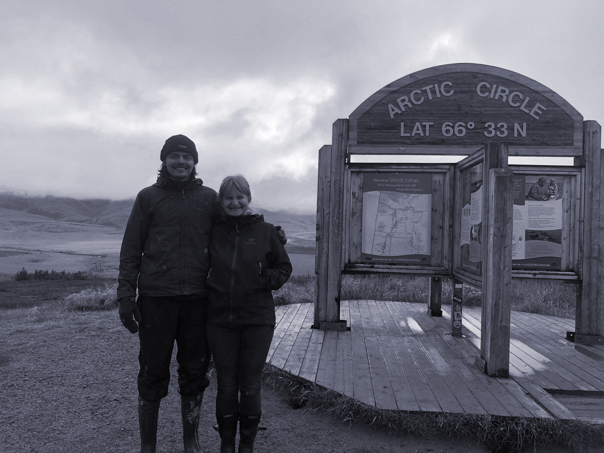

<!--
 About Section 
-->
<div id="about-me-container">
    <div id="aboutMeContent">
        <h2>About Me</h2>
        <p>
            Hi! I am currently in my junior year at McGill university, pursuing a degree in Mathematics and Computer Science.
            I am generally interested in using math to solve hard problems in finance,  physics, computer science and beyond.
            <!-- For a distilled list of experience, here is my <a href="./CV.pdf">CV</a>.-->
        </p>
        <p>
            Right now I work in <a href="http://www.physics.mcgill.ca/~acliu/research.html">Dr. Adrian Liu’s</a> lab, 
            where we are trying to apply image segmentation algorithms to extract 
            foreground contaminants from 21cm cosmology observations.
            I am also working on tensor network optimization methods for detecting quantum entanglement with <a href="https://www.math.mcgill.ca/gantumur/">Dr. Gantumur Tsogtgerel</a> at <a href="https://www.mcgill.ca/mathstat/">McGill University</a>.
        </p>
        <p>
            When I’m not doing research I like to write code (or pretty much anything) in vim, learn about design, 
            and explore various branches of applied math. This site is meant (someday) to document those findings.
        </p>
        <p>
            When I get tired of staring at a computer screen I like to sew or go running.
            In extreme cases of screen overload I have planted trees in Northern Ontario and hitchhiked around the Western Canadian Arctic. 
            <!--It turns out that these moments cannot be reduced to a few <a href="https://flic.kr/s/aHsmKTqEbD">photos</a>, and yet these experiences have been integral in how I approach relationships and life.-->
            The hitchhiking was a lot of fun because it was a way to learn about complete strangers. In that spirit, if you'd like to have a chat then feel free to find me on the road or through some other means!
        </p>
        <!-- <div class="text-center" style="padding: 6vw 4vw; font-style: italic;">
            <br>
        Photo of me and my friend Gudrun who gave me a lift on the <a href="https://www.google.com/maps/place/Dempster+Hwy/@66.6890491,-136.6709425,6z/data=!4m5!3m4!1s0x5140e855ab3635c1:0x46adf85ac909e227!8m2!3d66.3114467!4d-136.6971585">Dempster Highway</a>.
        </div> -->
    </div>
</div> 

